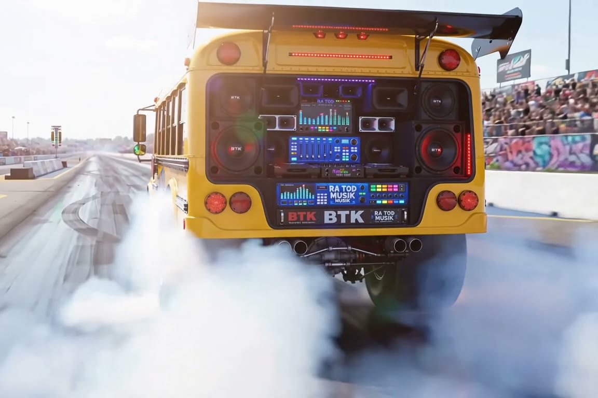
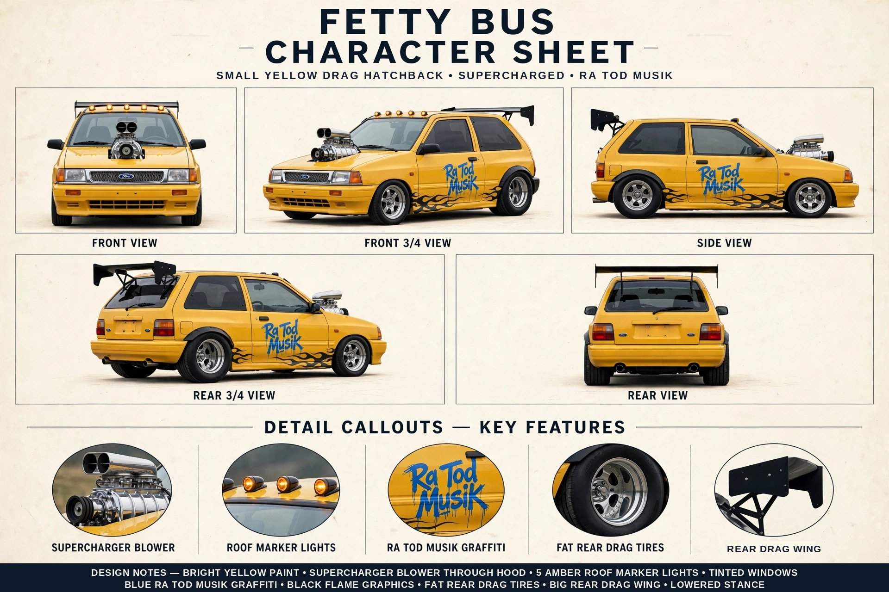
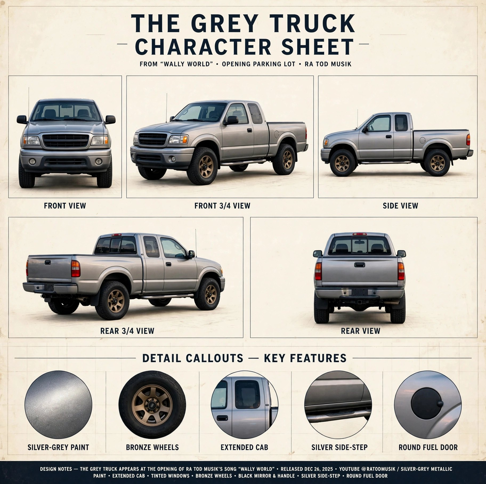
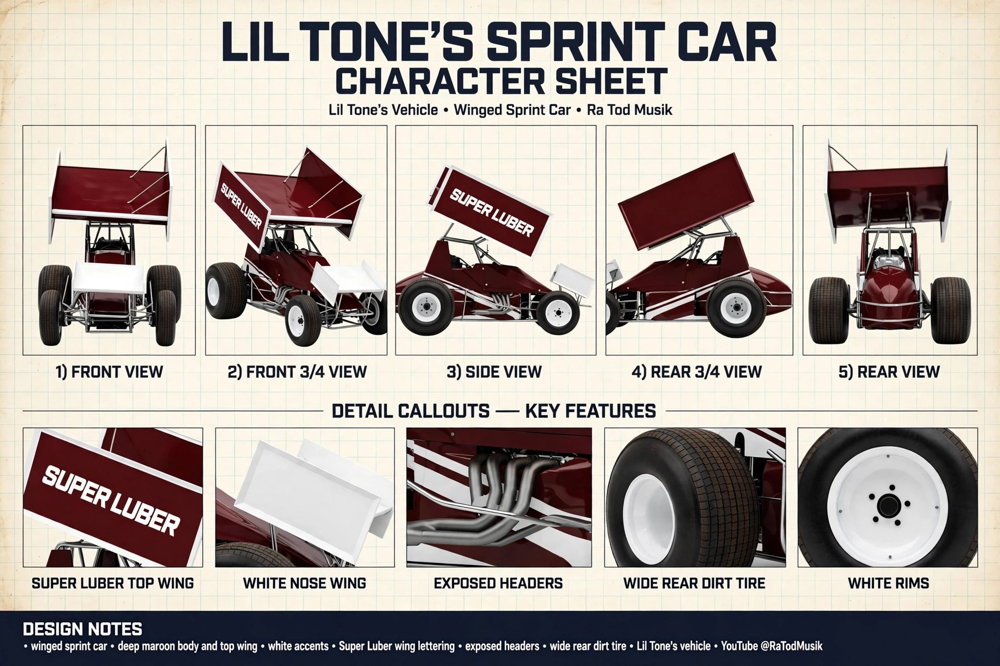
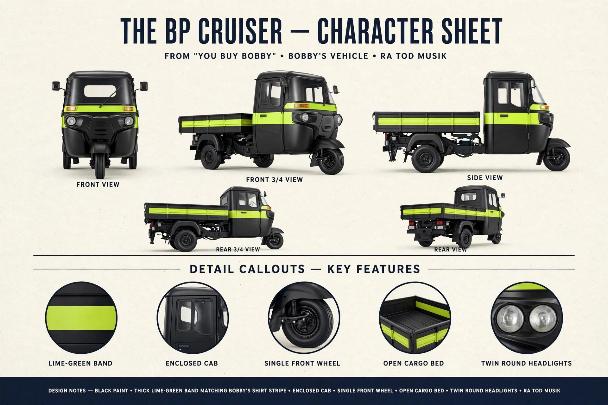
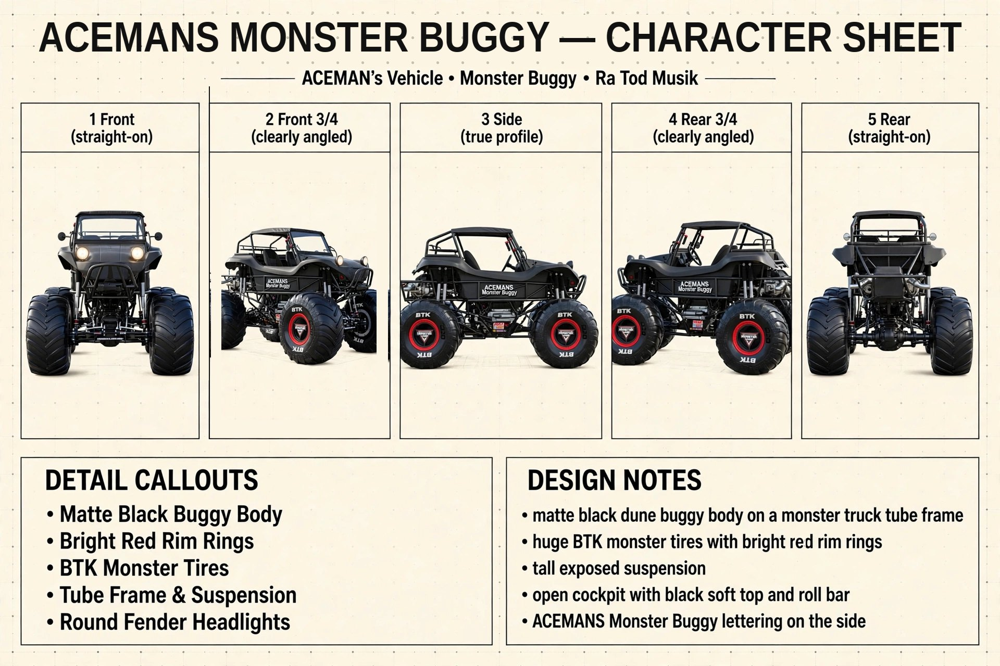

The Short Bus
Ra Tod's own yellow drag bus. The star of the strip.

The Game
The Short Bus hits the drag strip. Pick your ride, burn out, earn your NOS, and run both strips for the best total time.
Straight-up drag racing in your browser — no download, no install.
Every race runs two strips. Your time is Strip 1 + Strip 2 + Total — both runs count.
Four rides line up per race: you pick yours, and three rivals fill the other lanes.
NOS is earned by how you drive — then spend it down the strip when it counts.
Automatic or manual transmission — your call, every race.
Burn out, stage, and launch on the tree — with racing sounds only. No music in the game; the strip does the talking.
No download, no install. Open the page and you're at the strip.
Six selectable rides. Tap a character sheet to see it full size.
Ra Tod's own yellow drag bus. The star of the strip.

Small, yellow and boosted — blower through the hood, fat drag tires out back.

Wally World's grey pickup, bronze wheels, ready to run.

Maroon-and-white winged sprint car. SUPER LUBER on the wing.

Bobby's black three-wheeled cruiser with the lime-green band.

Matte black buggy on a monster-truck chassis, red rim rings.
The tree's lit and the lanes are open.
More from Ra Tod Musik